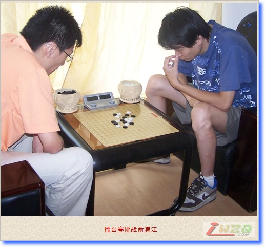
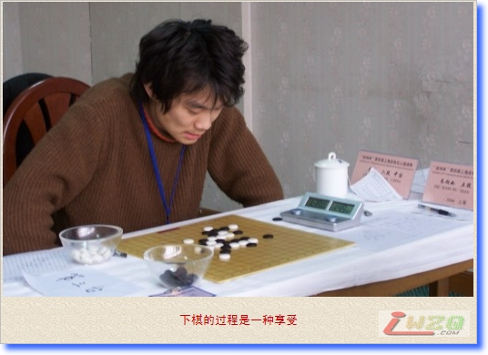
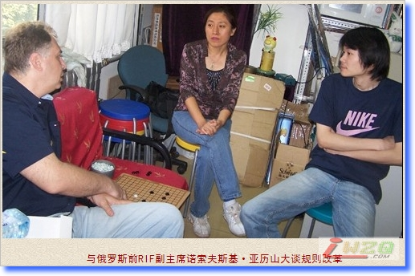

曹冬专访：执着只因热爱
#1 曹冬专访：执着只因热爱作者：有志青年 发表时间：2007-8-1 15:25:21
原文地址：http://www.rifchina.com/Article/ShowArticle.asp?ArticleID=4304
"本站获原作者直接授权转载，不得从本站再次转载"
2007年7月22日，上海康虹花园。已连克北京胡渝、李一、仇云飞三员大将的上海队次锋俞满江六段气势如虹，坐镇上海，迎接北京队三将曹冬六段的挑战。
根据擂台赛规则，挑战者有权选择开局方 。曹冬深知技术与实战皆强的俞满江肯定要与自己拼算力，并以守和为目标。于是曹冬果断请守擂方开局，俞满江开出瑞星局，曹冬出乎意料之外地未交换，定式行至黑11，曹冬走出白12。
据励精教室介绍，白12是早期瑞星的最强防，早在1965年第4期全日本连珠名人战上就已出现过了，俞满江在新变化面前判断失误，白28活三后，俞满江投子，曹冬关键时刻力挽狂澜，攻擂成功。

你以前跟俞满江交手的胜负如何？对他了解多吗？
--- 交手过一次，就是今年5.1的上海名人赛，当时输了。看过一些他的对局 ，有一定的了解，感觉大家水平都差不多，输赢都正常。
顾炜老师说满江大器晚成， 也是国内目前比较少的技术研究和实战能力都很强的棋手。技术性棋手和实战性棋手的区别在哪里？
--- 技术性棋手是指有些棋手理论比较好，既有对很多开局变化的深入研究，也有中盘的计算能力，这样的棋手实战能力也一定会很强。实战性棋手呢，大概是心理素质好，应变能力强，面对未知领域，敢于发挥那类吧。
听说你们赛前出去泡脚，然后下六子棋，算不算放松的一种？
--- 算吧，总之不去想过多比赛的东西了，因为出门之前就想好让满江开了。
你觉得云飞这次主要输在了哪里？
--- 应该是研究吧，云飞下的这个变化我们认为黑棋如果杀不掉的话，白后盘会有机会。但对方已经研究出这个变化以及分支黑的杀法了。
仇云飞输了之后，擂台赛北京很被动了，当时有压力吗？想没想过自己会输？
--- 我确实没什么压力，如果输了也就输了，毕竟只是一盘棋，如果上海最后赢了，也只能证明人家整体就是强 。究竟谁的整体实力强，还是看最后比赛的结果吧 。

这几年你感觉自己的状态起伏大吗？
--- 可能2004年成绩稍差些吧，03年到04年，五子棋技术发展很快，突破性的变化和研究也出现了很多，可能当时自己技术上的更新改进稍慢了些吧。 05年成绩比较好，浙江冠军，全国冠军都是在这一年取得的。
总能在很多的比赛中看到你的身影，无论水平高低，每盘棋你都是认真对待 。对你而言，下棋更多的是享受它的过程，还是其它？
--- 我觉得比赛本身就是一种练棋的形式，在比赛中发现问题后去改进。同时也是一种享受，正式的比赛和平时下着玩拆棋是不一样的，很有乐趣，相信很多棋手都有这种感觉的。
你为何不参战E-MALI大赛?
--- 以前也打过一个叫神龙杯的慢棋比赛，感觉不错，如果有e-mali的号，有时间的话也会去打打 。
如果学的不是五子棋，假设一下，如果是其它棋类，你认为自己依然会取得这样的成就和影响么？
--- 这很难说，现在学其它肯定晚了，但我现在这个年龄的人学五子棋肯定不晚，还有取得好成绩的可能。

有人说你下棋时过于追求完美，怎样的下法，才叫完美？每一手都精益求精？整个棋局成为名谱？漂亮地获胜？
--- 也不能说是追求完美吧，只是想找出每一步棋最合理与最有效率的下法 。
现行规则下，黑还是占有很大优势，你为何喜欢用白棋？
--- 也不是喜欢吧，黑优的局还是喜欢用黑棋。像一些平衡局感觉自己用白棋会更有把握一些，只能说每个人下棋的风格和对棋的理解不同吧 。
你怎么看目前比较热门的规则改革？
--- 事物都是在发展的，规则改革应该是不可阻挡，大势所趋吧。但就我个人而言，不赞同去掉
#2 Re:曹冬专访：执着只因热爱作者：潇洒 发表时间：2007-8-16 10:25:40
 偶像就是偶像啊
偶像就是偶像啊#3 Re:曹冬专访：执着只因热爱作者：17号蓝星仔 发表时间：2007-12-3 11:58:51
呵呵 潇洒真好 好歹你也和偶像全国赛战了一把 应该很享受吧